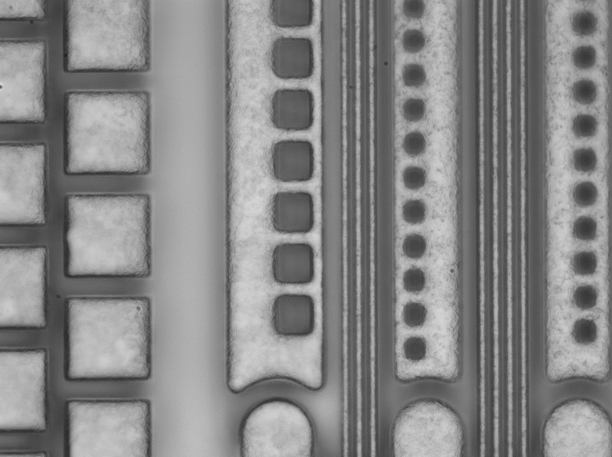

Introducing WVSPEC Precision
Improving Your Metrology System
WVSPEC Precision is a company composed of senior optics researchers. We respect and admire the great theoretical foundation left over the past century, and believe that the problems encountered will be solved as long as we apply the theory and model well.
WVSPEC Precision is the enabler of optical systems to deliver better and better service as customers' expect. In the face of rapid changing of requirements from end users, we continue to optimize the data process algorithms to improve the performance of crucial modules.

Our Solutions
Experts of WVSPEC Precision Technology work on instruments and algorithms development of surface profile, transparent film thickness, and the analytic absorption/matted materials for more than 10 years.
Surface Profile
We focus on surface analysis of the finest roughness from 1 nm to tens nm. Our algorithm deals with the off-axis interference data to sub-nano resolution. With optical profiling technology, no-contact, accurate and real-time surface measurement on highly polished material is achieved.
View More ›Transparent Film Thickness
We take advantage of spectral reflectance to help customers to control their manufacturing process. Based on plenty industrial experience, we provide consultancy service to choose the most propriate solution for transparent and matted thin film inline measurement.
View More ›Analytic Material
By spectroscopy, we could perform qualitative and quantitative analysis of target materials, especially for absorption/matted materials. We also use deep learning technology to build inference platform for specific applications (e.g. outer/inner properties, defect, tomography) from our customers.
View More ›Our Technology
Smart solutions are at the core of all that we do at WVSPEC Precision Technology. Our main goal is finding smart ways of using technology that will help build a better tomorrow for everyone, everywhere. Click Solutions page to learn more about the technology, or get in touch to set up a meeting with one of our representatives.
System Architecture
Result Analytics
Get in Touch
Get in touch to set up a meeting with one of our technical representatives for a custom solution to your precision measurement challenges.